從註冊引擎到對局與復盤的流程
截圖於 Linux 上以繁體中文介面擷取。
註冊用於對局與分析的 USI 引擎
也可以註冊 ShogiBoardQ 的子模組——將棋引擎 Hayanagi。執行檔的位置以及棋力等設定，請參閱 Hayanagi 的說明（英文）。
從選單「設定」→「引擎設定…」開啟引擎註冊對話方塊。初次使用時尚未註冊任何引擎。
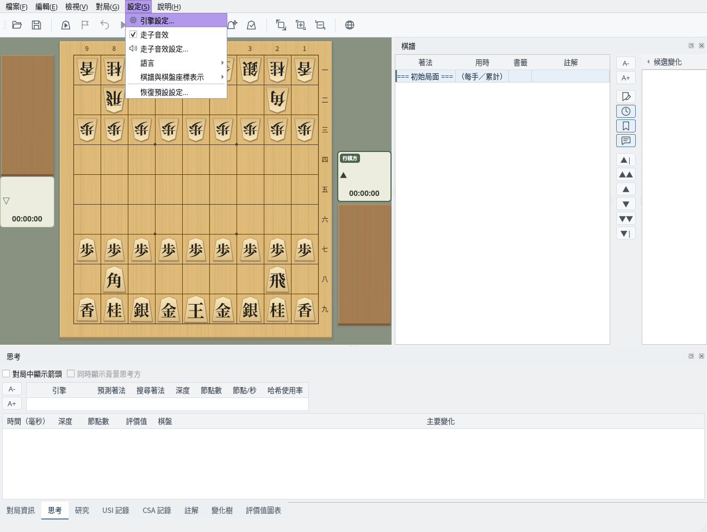
主視窗：選擇選單「設定」→「引擎設定…」
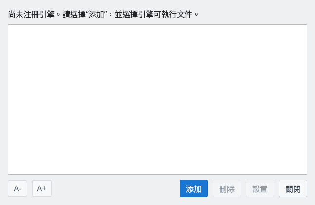
引擎註冊對話方塊：初始狀態
點選「新增」按鈕，選擇 USI 引擎的執行檔。
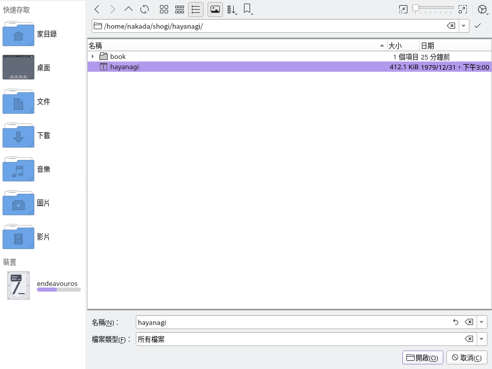
檔案選擇對話方塊：選擇 Hayanagi 的執行檔（hayanagi）
引擎被正確識別後，會加入列表中。
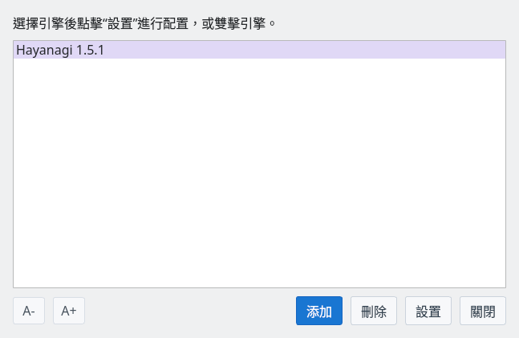
註冊完成：引擎已加入列表
點選「設定」按鈕，可以變更引擎的各項選項（雜湊大小、執行緒數等）。
在「背景思考」中啟用「在對手行棋時思考」後，支援此功能的引擎會利用預測的應著，在對手行棋時繼續思考。對於 Gikou 2 等未在選項列表中顯示 USI_Ponder 的引擎也可以設定。原有的 USI_Ponder 設定值會沿用；沒有設定時從停用背景思考開始。
「即使引擎未報告該選項，也傳送 USI_Ponder」通常保持啟用。若引擎回報不支援該選項的錯誤，請將其停用。即使停用此通知，對於支援背景思考的引擎，GUI 仍可開始背景思考。設定依引擎分別儲存，並於下次啟動引擎時生效。
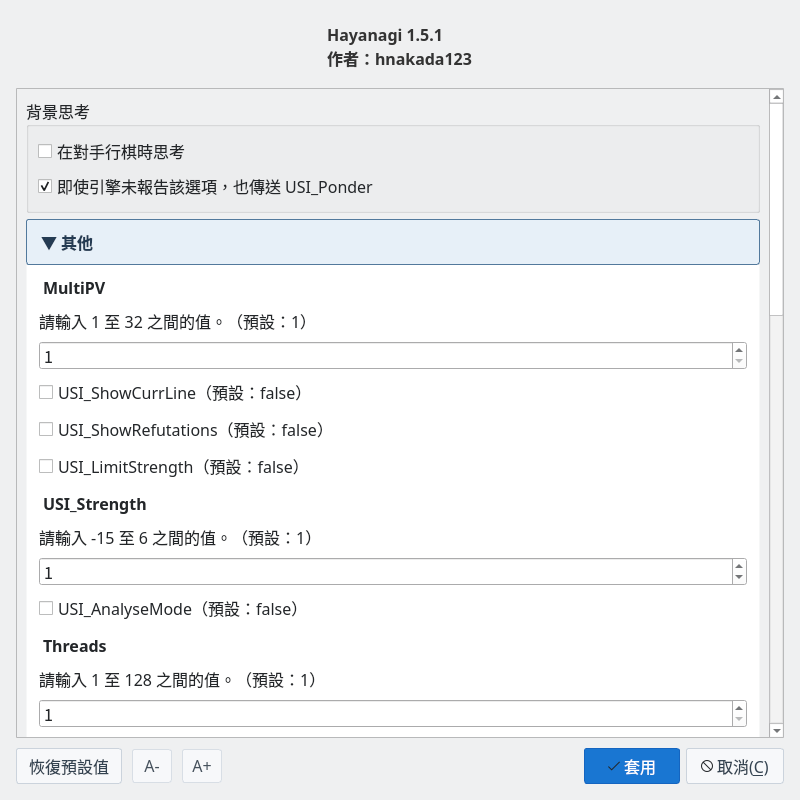
引擎設定：調整雜湊大小、執行緒數等
可以註冊多個引擎，於對局或引擎對引擎時分別使用。
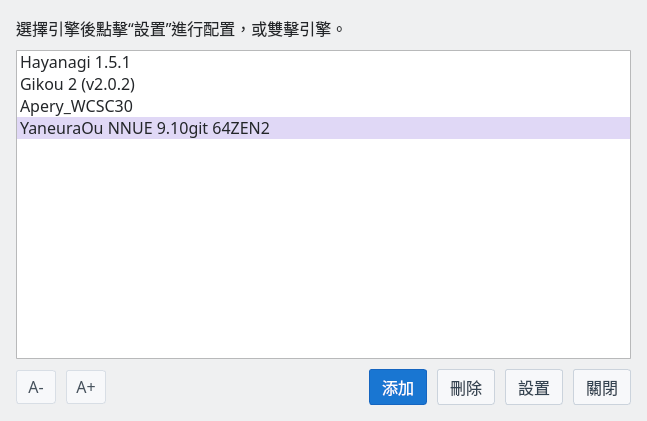
註冊多個引擎：依用途選擇使用
在對局對話方塊中設定對局條件
從選單「對局」→「對局…」開啟對局對話方塊，可以設定以下項目。
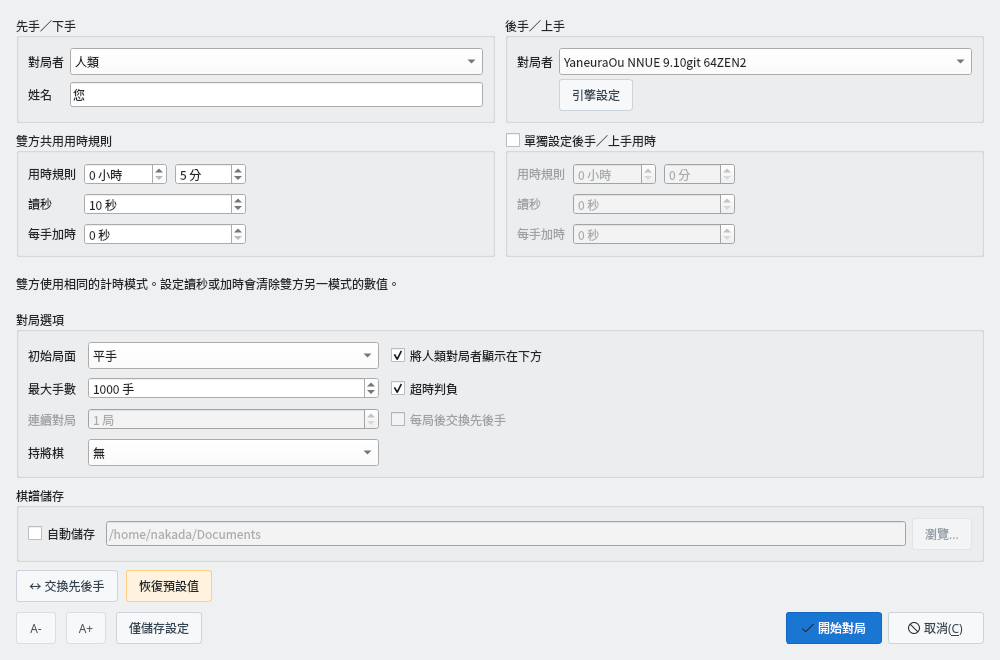
對局對話方塊：設定對局者、用時與初始局面等
在對局畫面中即時查看棋譜與引擎的思考資訊
對局開始後，「思考」分頁會即時顯示引擎的思考資訊。
在「思考」分頁中啟用「對局中顯示箭頭」後，會以紅色實線在棋盤上顯示行棋方引擎目前的最佳候選著法。啟用「同時顯示背景思考方」後，會以藍色虛線追加顯示正在背景思考的引擎的應著，並在「思考」分頁中顯示其假定的對手著法。背景思考的箭頭表示該預測著法被走出時的應著。顯示設定會被儲存，不會變更引擎本身的背景思考設定。研究模式中的箭頭依照「研究」分頁的設定。
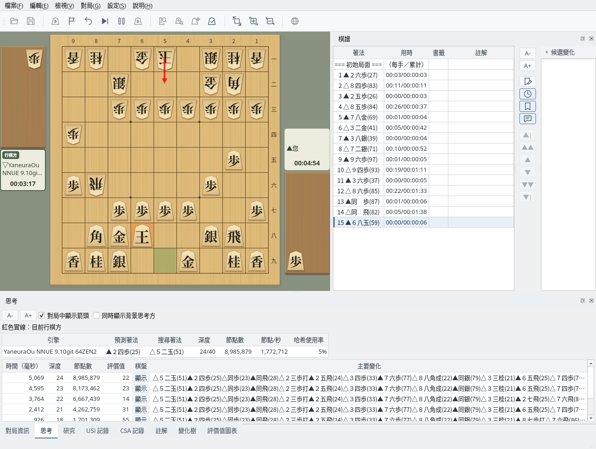
思考分頁：即時顯示引擎的思考資訊
在「USI 記錄」分頁中，可以查看 GUI 與引擎之間透過 USI 協定進行的通訊紀錄。
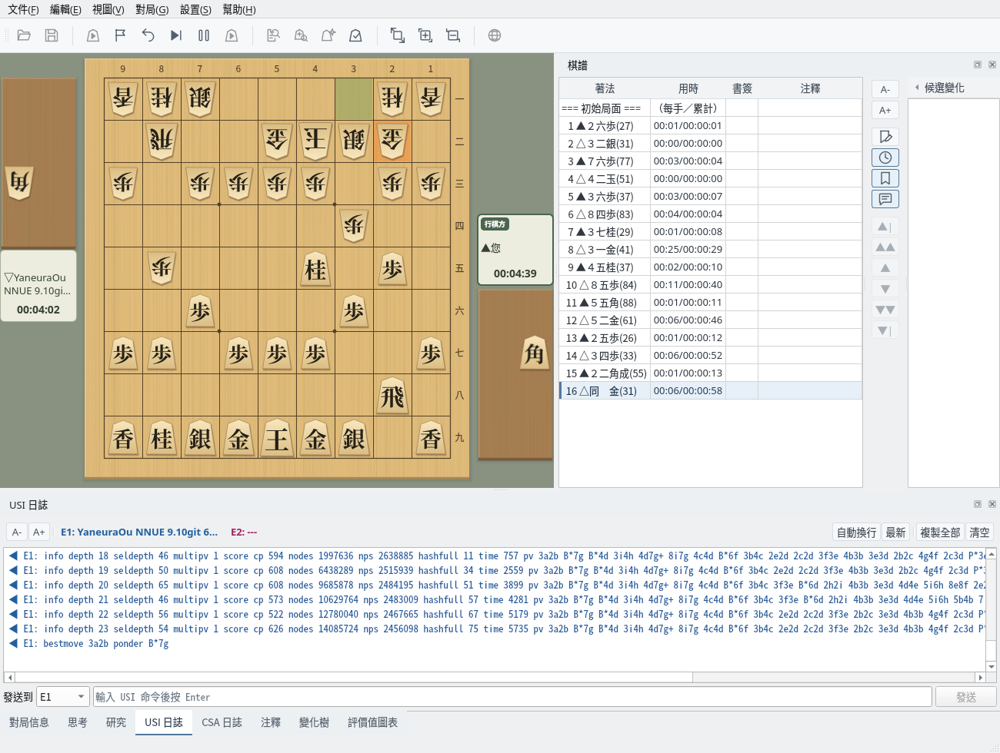
USI 記錄：即時顯示 GUI 與引擎之間的 USI 協定通訊
在主要變化顯示視窗中，可以在棋盤上重播引擎的主要變化。
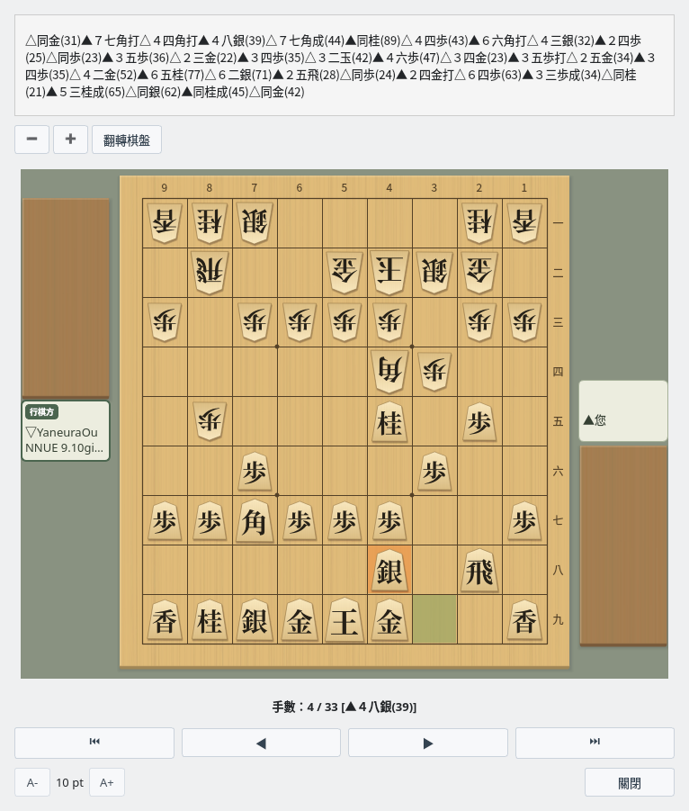
主要變化顯示：在棋盤上直觀呈現引擎的主要變化
透過評價值圖表可以直觀掌握形勢的變化。對局中也會即時更新。
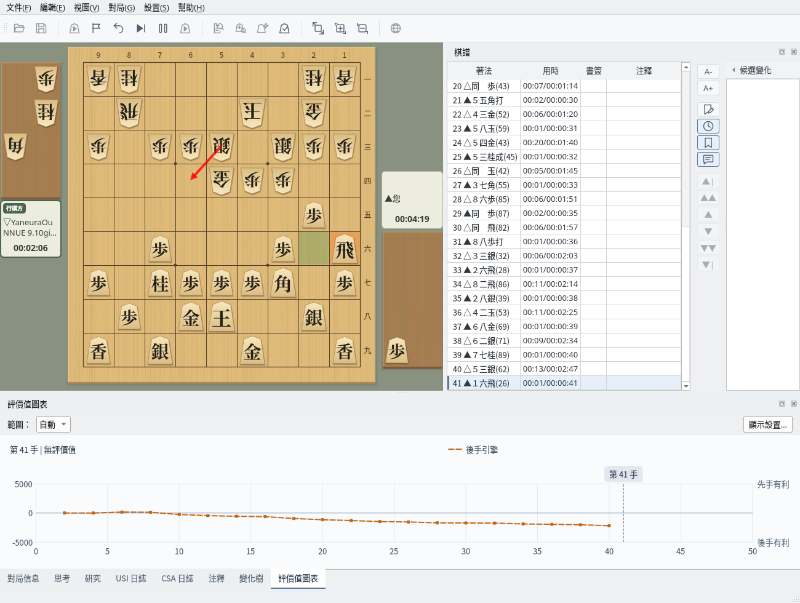
評價值圖表：即時顯示形勢的變化
「對局資訊」分頁會顯示對局日期、開始時間、先手、後手、讓子、用時規則、結束時間等對局資訊。
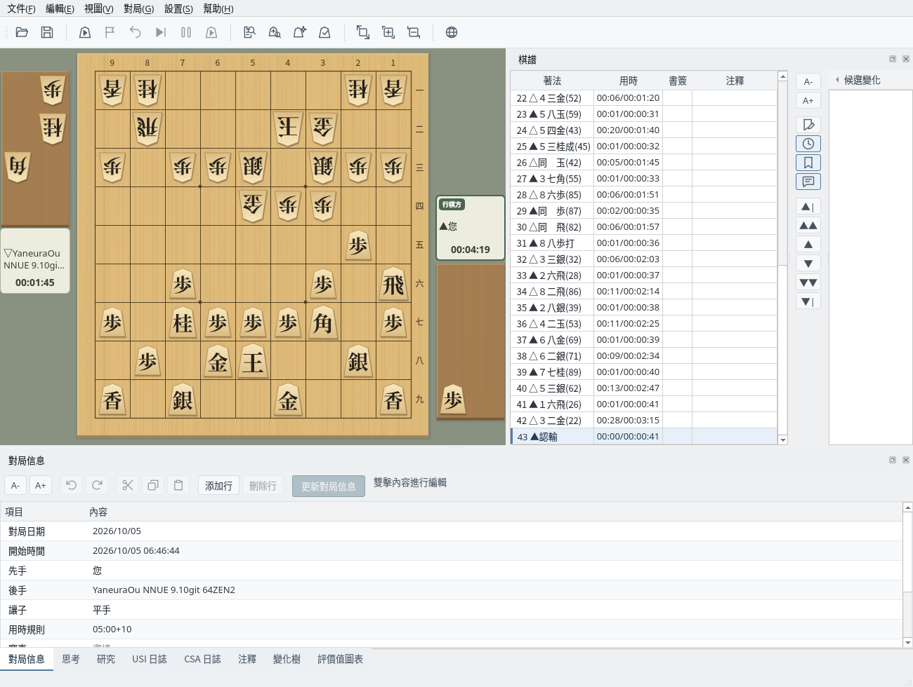
對局資訊：顯示對局的相關資訊
「變化樹」分頁不僅顯示本譜，也會顯示變化中的著法。對局中使用「悔棋」撤回後再走出不同的著法時，實際走出的手順會成為本譜，被撤回的手順則作為變化保留。
對局結束後，棋盤僅供瀏覽，無法移動棋子。若要從中途局面繼續對局，請在棋譜中選擇該局面，並在對局對話方塊中將初始局面設為「目前局面」後開始對局。新的著法會作為變化記錄。
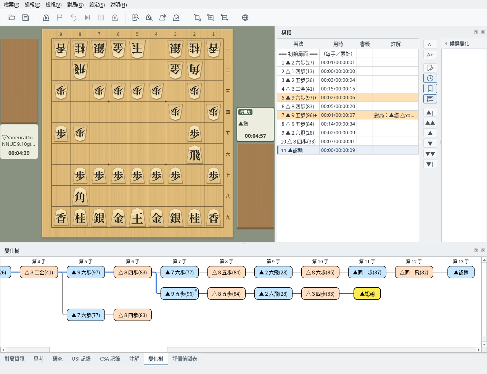
變化樹：顯示本譜以及其他變化的著法